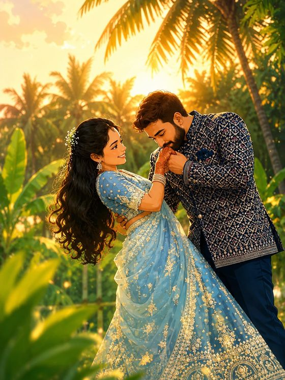

"May the golden shower of talambralu, blessed as in the sacred wedding of Sita and Rama, bring this couple a lifetime of love, prosperity and grace."
together with the family, request the honour of your gracious presence with family and friends at the auspicious wedding of their daughter
Mee Aasheervaadham Kosam — we seek your presence and blessings as the couple begins their new life.
With best compliments,
Borusu & Yalla Families
Bandhumitrula Abhinandanalatho